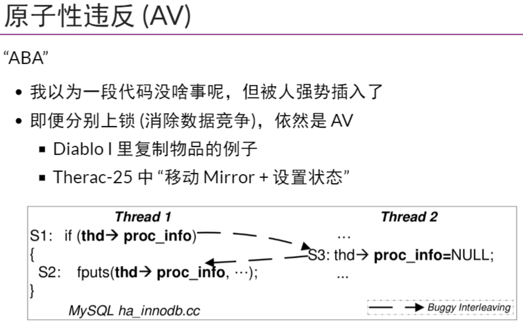

12. 真实世界的并发 Bug
死锁 (Deadlock)¶


def main():
heap.table = '✅'
# 1st lock()
while True:
seen = heap.table
heap.table = '❌'
sys_sched()
if seen == '✅':
break
# 2nd lock()
while True:
seen = heap.table
heap.table = '❌'
sys_sched()
if seen == '✅':
break
数据竞争¶
Warning
所以不上锁不就没有死锁了吗？


Since C11: data race is undefined behavior
代码示例：Peterson 算法实现
在 C/C++ 标准中，数据竞争是 undefined behavior。开发者有责任保证 conflict 的内存访问之间的 happens-before 关系，或是使用原子指令。虽然我们的实现使用了 __sync_synchronize，在编译器和 x86 处理器的 specification 不发生改变的前提下，代码本身是正确的，但这不是鼓励的编程方法。
#include "thread.h"
#define A 1
#define B 2
#define BARRIER __sync_synchronize()
atomic_int nested;
atomic_long count;
void critical_section() {
long cnt = atomic_fetch_add(&count, 1);
int i = atomic_fetch_add(&nested, 1) + 1;
if (i != 1) {
printf("%d threads in the critical section @ count=%ld\n", i, cnt);
assert(0);
}
atomic_fetch_add(&nested, -1);
}
int volatile x = 0, y = 0, turn;
void TA() {
while (1) {
x = 1; BARRIER;
turn = B; BARRIER; // <- this is critcal for x86
while (1) {
if (!y) break; BARRIER;
if (turn != B) break; BARRIER;
}
critical_section();
x = 0; BARRIER;
}
}
void TB() {
while (1) {
y = 1; BARRIER;
turn = A; BARRIER;
while (1) {
if (!x) break; BARRIER;
if (turn != A) break; BARRIER;
}
critical_section();
y = 0; BARRIER;
}
}
int main() {
create(TA);
create(TB);
}
原子性和顺序违反¶


Learning from mistakes - A comprehensive study on real world concurrency bug characteristics
TOCTTOU vulnerabilities in UNIX-style file systems: An anatomical study (FAST'05)
“原子性” 一直是开发者希望拥有的——对编程者而言，理想情况是一段代码的执行要么看起来在瞬间全部完成，要么好像完全没有执行过。代码中的副作用：共享内存写入、文件系统写入等，则都是实现原子性的障碍。因为 “原子性” 如此诱人，在计算机硬件/系统层面提供原子性的尝试一直都没有停止过：从数据库事务 (transactions, tx) 到软件和硬件支持的 Transactional Memory “an idea ahead its time” 到 Operating System Transactions，直到今天我们依然没有每个程序员都垂手可得的可靠原子性保障。
而保证程序的执行顺序就更困难了。Managed runtime 实现自动内存管理、channel 实现线程间通信等，都是减少程序员犯错的手段。
def main():
sys_bwrite('/etc/passwd', ('plain', 'secret...'))
sys_bwrite('file', ('plain', 'data...'))
pid = sys_fork()
sys_sched()
if pid == 0:
# attacker: symlink file -> /etc/passwd
sys_bwrite('file', ('symlink', '/etc/passwd'))
else:
# sendmail (root): write to plain file
filetype, contents = sys_bread('file') # for check
if filetype == 'plain':
# TOCTTOU interval
sys_sched()
filetype, contents = sys_bread('file') # for use
match filetype:
case 'symlink': filename = contents
case 'plain': filename = 'file'
sys_bwrite(filename, 'mail')
sys_write(f'{filename} written')
else:
sys_write('rejected')
# Outputs:
# /etc/passwd written
# file written
# rejected
Take-away Messages¶
人类本质上是 sequential creature，因此总是通过 “块的顺序执行” 这一简化模型去理解并发程序，也相应有了两种类型的并发 bugs：
- Atomicity violation，本应原子完成不被打断的代码被打断
- Order violation，本应按某个顺序完成的未能被正确同步
与这两类 bugs 关联的一个重要问题是数据竞争，即两个线程同时访问同一内存，且至少有一个是写。数据竞争非常危险，因此我们在编程时要尽力避免。